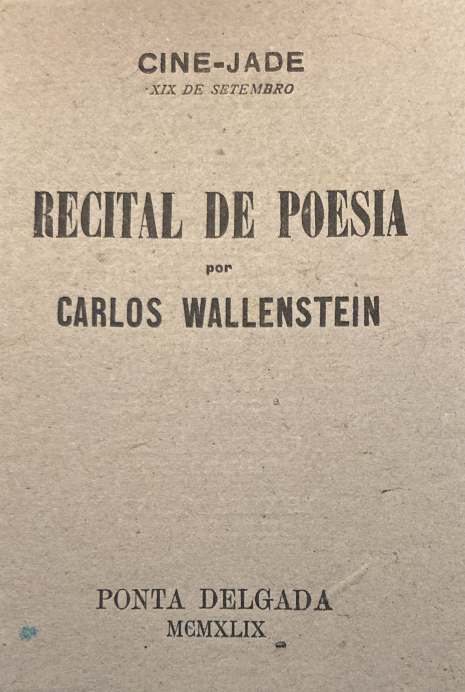

Carlos Wallenstein (1926–1990)
Teatro, Surrealismo e Intervenção Cultural em Portugal

Carlos Wallenstein foi uma das figuras mais influentes e multifacetadas da cultura portuguesa do século XX, destacando-se como ator, encenador, dramaturgo, escritor surrealista e gestor cultural. A sua obra atravessa o teatro experimental, o teatro radiofónico, a poesia e a política cultural, desempenhando um papel decisivo na modernização das artes performativas em Portugal. Esta página reúne a sua trajetória artística, o enquadramento estético da sua escrita e a relevância institucional da sua ação, o seu contributo duradouro para a cultura portuguesa contemporânea.
1. Introdução
A historiografia do teatro português do século XX tende a privilegiar figuras mais visíveis do ponto de vista mediático ou institucional. Contudo, Carlos Wallenstein ocupa um lugar singular enquanto artista intelectual, cuja influência se exerceu tanto no plano da criação como na definição de políticas culturais estruturantes. A sua atuação articula prática artística, reflexão crítica e intervenção institucional, tornando-o um caso paradigmático para o estudo da relação entre arte e sociedade em Portugal.
2. Percurso biográfico e formação

Carlos Manuel Wallenstein dos Santos Teixeira nasceu a 4 de novembro de 1926, em Ponta Delgada (Açores), falecendo em Lisboa a 6 de novembro de 1990. Frequentou o Liceu Nacional de Antero de Quental, na cidade natal, e as Faculdades de Direito e de Letras (Ciências Histórico-Filosóficas), nas Universidades de Lisboa e Coimbra, abandonando os estudos antes da conclusão para se dedicar integralmente ao teatro¹.
A partir de 1943 colaborou com poesia, ficção e artigos na imprensa local, nomeadamente no jornal A Ilha, em torno do qual se formou então um movimento literário e social em que intervieram jovens em serviço militar no arquipélago, como Joel Serrão e Egito Gonçalves. A sua poesia de então tinha por principal interesse os dados que lhe oferecia a vida das ilhas; evoluiu depois, no contacto com outras realidades, sob a influência dos movimentos surrealistas⁹ (ver a Cronologia).
Este abandono do percurso académico tradicional não deve ser interpretado como um gesto de rejeição do conhecimento, mas antes como uma escolha consciente por uma formação prática e experimental, em consonância com a sua posterior crítica às estruturas institucionais fechadas do campo artístico.
Sobre a sua família e origens, ver Origens e família; mais fotografias da infância e da família estão em Fotografias.
3. Carlos Wallenstein e o teatro português
3.1. Teatro experimental e crítica ao academismo

Entre 1948 e 1963 Wallenstein participou em movimentos de teatro estudantil, experimental e profissional, orientado para a renovação do teatro e a sua adequação à sociedade contemporânea⁹. Segundo outras fontes, estreou-se com A Escola de Maridos de Molière, no seio da companhia Os Companheiros do Pátio das Comédias, dirigida por António Pedro, figura central do modernismo e do surrealismo português². A sua ligação posterior ao Teatro Estúdio do Salitre, ao Teatro Experimental do Porto e ao teatro universitário consolidou uma prática artística marcada pela experimentação formal e pela recusa do conservadorismo estético. Para o detalhe destes anos, ver a Cronologia; o arquivo guarda ainda a partitura de Serrana, de Alfredo Keil, com notas de encenação suas (Documentos).
Paralelamente, Wallenstein assumiu uma posição crítica face ao monopólio do Conservatório Nacional, defendendo que o acesso à profissão de ator não deveria depender exclusivamente da formação académica formal, mas antes da experiência artística e do mérito³. Esta posição contribuiu para a gradual abertura do campo teatral português a percursos alternativos de profissionalização.
Em 1978 foi diretor do Teatro Popular – Companhia Nacional I, cargo que manteve apenas durante sete meses (o primeiro espectáculo foi Jesus Cristo em Lisboa; ver Documentos), por incompatibilidade com as orientações dos departamentos estatais para a cultura⁹.
Como actor, interpretou o Marquês de Sade em Marat/Sade, de Peter Weiss, na Comuna (1984; ver o programa e a Cronologia), e Telmo Pais em Frei Luís de Sousa, no ACARTE (1986).
3.2. O teatro radiofónico como forma autónoma
Um dos contributos mais inovadores de Carlos Wallenstein reside no teatro radiofónico, área em que desenvolveu uma dramaturgia própria, pensada especificamente para o meio sonoro. Ao contrário de adaptações de textos cénicos, as suas peças radiofónicas exploram o som, o silêncio e a palavra poética como elementos estruturantes da ação dramática⁴.
Obras como Trémulos Perante o Senhor, Os Fantasmas como Prumo das Decisões Domésticas e Cassilda e o Reino dos Sonhos demonstram uma conceção do teatro radiofónico como um espaço de liberdade criativa, onde o ouvinte é chamado a construir mentalmente o universo dramático. Esta produção encontra-se reunida no volume Obras Completas – Teatro Radiofónico, publicado postumamente.
Para a televisão, assinou em 1973 a versão do Ajax, de Sófocles, realizada por Herlander Peyroteu para a RTP (Cronologia).
3.3. A voz: recitais e discos

A dedicação de Wallenstein à poesia manifestou-se também em recitais que realizou durante vários anos em diversas regiões do país, com o objetivo de expandir o amor pela poesia e o conhecimento da sua expressão contemporânea. Gravou três discos de poesia, editados pela Sassetti em 1973 e 1974: Camões (LP), Antologia da Poesia Contemporânea (álbum de 2 LP) e Almada (LP)⁹. Um exemplo da sua arte de declamar: Almada Negreiros, excerto de Aqui Cáucaso (YouTube). Os discos e o vídeo estão também no Arquivo Multimédia.
4. A escrita surrealista: poesia e ficção
4.1. Inserção no surrealismo português
Enquanto escritor, Carlos Wallenstein insere-se claramente na estética do surrealismo português, mantendo contactos com o Grupo Surrealista de Lisboa e partilhando afinidades com autores como Mário Cesariny ou António Maria Lisboa⁵. Uma curiosidade do arquivo, desse meio: as folhas das sessões «espíritas» de 1952, em que escrevia como «médium» na presença de Cesariny e de Manuel de Lima (Documentos; Cronologia). A sua escrita caracteriza-se por uma linguagem imagética, humor corrosivo e uma crítica constante às estruturas de poder e à normatividade social.
4.2. Obras literárias e leitura crítica
Na poesia, destacam-se Teoria da Tributação (1966) e Corpo Conflito (1983). A primeira pode ser lida como uma alegoria crítica do peso fiscal, burocrático e simbólico do Estado sobre o indivíduo, funcionando como uma crítica velada ao contexto político do Estado Novo⁶. Já Corpo Conflito aprofunda a tensão entre corpo, linguagem e identidade, num registo mais introspectivo e existencial. O arquivo guarda uma carta de Fernando Namora de 1966 (Correspondência).

Na ficção, obras como Cinco Histórias sem Classificação Especial (1953) revelam um gosto pelo insólito e pelo fantástico, frequentemente atravessado por ironia e subversão narrativa. No teatro, publicou, entre outras, A Mantilha de Beatriz (1973). Ver o «Do Autor» de Cinco Histórias (1953), onde anuncia projectos futuros, e a dedicatória de O Amor das Três Laranjas (1984) às «Evangelinas das Furnas», em Documentos (e Origens e família).
5. Gestão cultural e Fundação Calouste Gulbenkian
Entre 1963 e 1990, Carlos Wallenstein dirigiu a Secção de Teatro da Fundação Calouste Gulbenkian, integrada no Serviço de Belas-Artes, de cujo diretor, Nobre Gusmão, foi também assistente⁹. Desempenhou um papel determinante na estruturação do teatro português contemporâneo⁷. Foi ainda Secretário Executivo do Levantamento Cultural do País, iniciativa que se tornou um marco da época⁹. Durante este período, promoveu:
• a descentralização cultural,
• o apoio a companhias experimentais,
• a circulação nacional e internacional de espetáculos,
• e a profissionalização do setor teatral.

Num texto preparado em 2019 a pedido da própria Fundação, a família resumiu assim essa relação:
A sua relação com «a Fundação», como sempre se lhe referia, nasceu logo nos primórdios da materialização do projeto, no período de artesania de alguns dos seus elementos estruturantes, como a criação do Coro e Orquestra, Ballet Gulbenkian, organização e recrutamento das equipas técnicas e de produção, primeiras edições do Festival Gulbenkian de Música, entre tantos outros exemplos de uma ainda intermitente mas intensa e multifacetada colaboração, que o levaria também num longo roteiro de representação da Fundação junto de instituições conexas e projetos fora de Portugal, na Europa, África, Médio e Extremo Oriente, Brasil e restante América Latina.
Será um pouco mais tarde, perante os sucessivos confrontos com «a (criminosa) intervenção dos “sete alfaiates da doutrina oficial e as suas sete tesouras da conveniência mental”», tão certeiramente alvejados num dos poemas da Teoria da Tributação, que se apercebe da absoluta necessidade de mecanismos alternativos de apoio estrutural e material, bem como de abertura do país às diversidades da criação artística e literária, e que, com o incondicional, diplomático e firme apoio do Conselho de Administração da Fundação Calouste Gulbenkian, irá continuamente prosseguir à frente do setor de teatro do Serviço de Belas-Artes, até à data da sua morte, em 1990.
Alguns momentos relevantes do seu percurso terão sido também o florescimento e sedimentação das companhias independentes no período a montante e a jusante da Revolução de Abril, só possíveis com o apoio da Fundação; a diversidade na divulgação de linguagens e estéticas de que são exemplos tão díspares a apresentação da companhia de Grotowski nas escadarias do átrio dos auditórios, o Festival de Teatro Popular nos jardins da Fundação, ou ainda o espetáculo-documentário Portugal, Anos 40 – Anos 80, prolongamento dramatúrgico da exposição organizada pela Fundação; a diversidade de encontros com relevantes personalidades do pensamento teatral contemporâneo, de que foi exemplo o ciclo «O Texto e o Acto»; ou as diversas colaborações na Colóquio/Letras […]
Críticos como Luiz Francisco Rebello e Pedro Tamen sublinham que a dimensão da sua ação institucional é inseparável da sua prática artística, constituindo um modelo raro de coerência entre criação e política cultural⁸.
Ver também, no arquivo: o Auto da Floripes (1972), o Tchiloli (1973), as deslocações ao Médio Oriente (1966) e o início do trabalho na Fundação.
6. Legado e continuidade

Carlos Wallenstein deixou um legado que se prolonga para além da sua obra individual, visível na continuidade artística da sua família e na permanência das suas obras no repertório radiofónico e académico. Ver Origens e família e a série de fotografias dedicada a Maria do Bom Sucesso.
Mais do que um criador isolado, Wallenstein deve ser entendido como um mediador cultural, cuja ação contribuiu para redefinir o lugar do teatro e da literatura na sociedade portuguesa.
7. Conclusão
A análise da trajetória de Carlos Wallenstein revela uma figura central na modernização cultural portuguesa, cuja importância reside tanto na criação artística como na intervenção institucional. O seu percurso confirma que o teatro, a literatura e a política cultural podem constituir formas complementares de resistência crítica e de afirmação da imaginação como valor fundamental da vida coletiva.
________________________________________
Notas:
1. Dicionário Cronológico de Autores Portugueses, vol. V, DGLAB.
2. RTP Arquivos, Perfil: Carlos Wallenstein.
3. Idem, Carlos Wallenstein – II Parte.
4. DramaOnline, Teatro Radiofónico de Carlos Wallenstein.
5. Escritas.org, verbete “Carlos Wallenstein”.
6. Rebello, Luiz Francisco, “Memória de Carlos Wallenstein”, Colóquio/Letras, n.º 120.
7. Fundação Calouste Gulbenkian, História das Exposições – Carlos Wallenstein.
8. Tamen, Pedro, prefácio a Obras Completas – Poesia, Edições Salamandra.
9. Carlos Wallenstein, nota autobiográfica datiloscrita, Ponta Delgada, 20 de abril de 1981 (arquivo familiar).
________________________________________
Bibliografia
Obras Publicadas:
– Cinco Histórias sem Classificação Especial. Lisboa: Contraponto, 1953.
– Teoria da Tributação. Lisboa: Sociedade de Expansão Cultural, 1966.
– A Celestina (teatro). Lisboa: Let, 1972.
– A Mantilha de Beatriz (teatro). Lisboa: Prelo / Sociedade Portuguesa de Autores, 1973.
– Trémulos Perante o Senhor (teatro; escrito originalmente para rádio). Lisboa: Moraes, 1982.
– Corpo Conflito. Lisboa: Moraes (Círculo de Poesia), 1983.
– O Amor das Três Laranjas (teatro). Lisboa: Plátano, 1984.
– Obras Completas. Lisboa: Edições Salamandra, 1998–2000.
Estudos e referências críticas:
– REBELLO, Luiz Francisco. “Memória de Carlos Wallenstein”. Colóquio/Letras, n.º 120, Fundação Calouste Gulbenkian, 1991.
– TAMEN, Pedro. Prefácio a Obras Completas – Poesia. Lisboa: Salamandra, 1998.
– DGLAB. Dicionário Cronológico de Autores Portugueses, vol. V.
– RTP Arquivos. Carlos Wallenstein (acervo audiovisual).
– DramaOnline. Verbete “Carlos Wallenstein”.